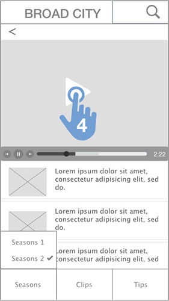
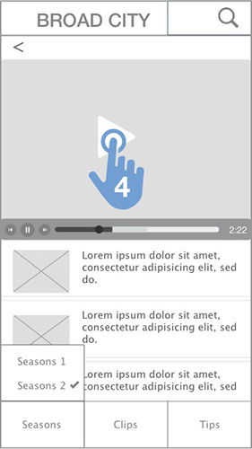

Broad City
The critically acclaimed Web series "Broad City" moves to Comedy Central as a half-hour scripted series. It's created by and stars Abbi Jacobson and Ilana Glazer as 20-something best friends who are trying to navigate life in New York, despite that their adventures always seem to lead down unexpected and bizarre paths.
Objectives
The goal of this project was to learn rapid prototyping. We've been given one week to go through entired process from research to high fidelity mockups.
My role
Design an application that will provide users an ability to see the list of episodes for a TV show, search through them and watch a selected episode. Make sure it has a minimalistic and intuitive design, provides an easy navigation and doesn't require authentication.


 
